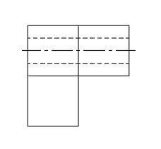
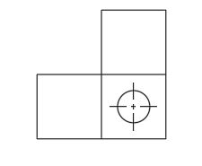

Learning Targets
- Recognize the long-short pattern used for centerlines.
- Locate the exact center of a circular feature.
- Distinguish feature symmetry from symmetry of the entire part.
Focus question: How do engineers show the center of a feature or object in a technical sketch?
Use this page with the lesson presentation and your engineering notebook.
Centerlines cross at the true center and identify a real axis or symmetrical feature.
Think first, then be ready to share a short response that connects the question to engineering communication.
The outline shows the feature size and shape, but a centerline identifies the precise center or axis used to locate and align the feature.
Centerlines identify centers, axes, and symmetrical features.
A centerline uses a repeating long-short pattern that differs from a hidden line.
The entire part may be asymmetrical even when one feature is symmetrical.
Rotate the part, move to standard views, and compare the circular feature, hidden geometry, and centerlines shown in the three orthographic views.
Compare each 2D projection with the interactive model. Use the buttons to align the 3D model with the matching standard view.



Click the exact center of the circular feature, then identify the symmetry shown by the circle in this view.
Use the Lesson 1.4 model and views to identify the circular feature and the axis that passes through it.
Quality check: Centerlines must cross at the true feature center and must not be confused with hidden lines.
Submit evidence that connects the centerline pattern to a real feature or axis.
Submission standard: Extend centerlines only far enough beyond the feature to remain clear and readable.
Use the lesson slides for guided practice, interactive checks, and the exit ticket.
Return to the IED course hub for units, resources, certifications, and current course information.